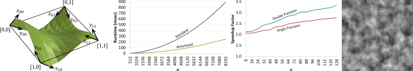
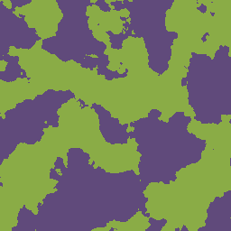

Ian Parberry,
"Amortized Noise",
Journal of Computer Graphics Techniques,
Vol. 3, No. 2, pp. 31-47, 2014.
[Manuscript and BibTex at JCGT]
Abstract
Perlin noise is often used to compute a regularly spaced grid of noise values. The amortized
noise algorithm takes advantage of this regular call pattern to amortize the computation cost of
floating-point computations over interpolated points using dynamic programming techniques.
The 2D amortized noise algorithm uses a factor of 17/3 ≈ 5.67 fewer floating-point multiplications
than the 2D Perlin noise algorithm, resulting in a speedup by a factor of approximately
3.6-4.8 in practice on available desktop and laptop computing hardware. The 3D amortized
noise algorithm uses a factor of 40/7 ≈ 5.71 fewer floating-point multiplications than the 3D
Perlin noise algorithm; however, the increasing overhead for the initialization of tables limits
the speedup factor achieved in practice to around 2.25. Improvements to both 2D Perlin
noise and 2D amortized noise include making them infinite and non-repeating by replacing the
permutation table with a perfect hash function, and making them smoother by using quintic
splines instead of cubic splines. While these improvements slow down 2D Perlin noise down
by a factor of approximately 32-92, they slow 2D amortized noise by a negligible amount.


These animated gifs were created by taking 128 slices across a 256x256x256
block of 3D noise with 5 octaves
generated by the amortized 3D noise algorithm.
The result is similar to 3D Perlin noise,
but it does not repeat at regular intervals,
and it is smoother since it uses a quintic spline instead
of a cubic spline.
The image on the left shows -1 as black, +1 as white, and values
in between as shades of gray. The image on the right shows
negative values as purple and non-negative values as green.
The source code for amortized noise is
available for free download from
https://github.com/Ian-Parberry/AmortizedNoise.
It has been released under the
GNU All-Permissive License and contains the following notice.
If these conditions are unacceptable to you, then do not download them.
Copyright Ian Parberry, (date).
This file is made available under the GNU All-Permissive License.
Copying and distribution of this file, with or without
modification, are permitted in any medium without royalty
provided the copyright notice and this notice are preserved.
This file is offered as-is, without any warranty.
The source code is written in C++ and includes project files for Windows Visual Studio 2012
and a Unix makefile using g++.
Documentation
An earlier version of this paper was published as
Technical Report LARC-2013-03,
Laboratory for Recreational Computing,
Dept. of Computer Science & Engineering, University of North Texas,
September 2013.